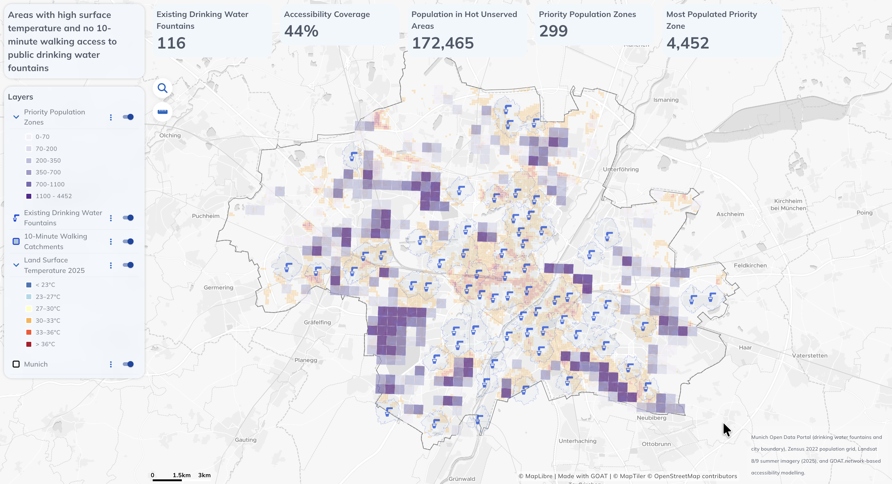
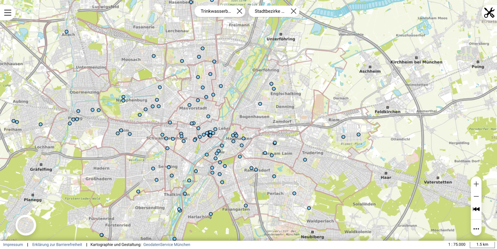

Überblick
Da die Sommertemperaturen in Europa steigen, untersucht dieses Projekt eine praxisrelevante stadtplanerische Frage: Wo sollten neue öffentliche Trinkbrunnen errichtet werden? Mit GOAT (Plan4Better) habe ich offene Daten zu Münchens 116 bestehenden öffentlichen Trinkbrunnen mit netzwerkbasierten Fußwegeinzugsbereichen, Bevölkerungsdaten und satellitengestützten Landoberflächentemperaturen 2025 kombiniert, um Infrastrukturlücken mit dem größten Einfluss auf die Bevölkerung zu identifizieren.
Wichtige Zahlen
- 116 bestehende öffentliche Trinkbrunnen in München (Landeshauptstadt München)
- 44 % der Münchner Bevölkerung innerhalb eines 10-Minuten-Fußwegeinzugsbereichs eines Brunnens
- 299 Prioritätszonen für neue Infrastruktur identifiziert
- 172.465 Einwohner in Prioritätszonen mit kombinierter Hitzebelastung und Erreichbarkeitslücken
Methodik
Bestandsnetz der Trinkbrunnen
Laden des offiziellen Datensatzes der 116 öffentlichen Trinkbrunnen der Landeshauptstadt München als Ausgangslage — ein aktuelles Bild der bestehenden Infrastruktur in der Stadt.
Netzwerkbasierte Fußwegeinzugsbereiche
Generierung von 10-Minuten-Fußwegeinzugsbereichen für jeden Brunnen über GOATs netzwerkbasierte Erreichbarkeitsanalyse — mit dem Ergebnis, dass nur 44 % der Münchner Bevölkerung fußläufig einen öffentlichen Brunnen erreichen kann.
Hitzebelastungsebene
Integration von Landoberflächentemperatur-Daten (LST) 2025 aus Satellitenbildern zur Identifikation von Bereichen mit der höchsten Hitzeexposition im Freien — als Flagging-Grundlage für Zonen, in denen ein Trinkbrunnen den größten Nutzen für die öffentliche Gesundheit hätte.
Identifikation der Prioritätszonen
Kombination von Bevölkerungsdichte, Hitzebelastung (LST > 30 °C) und Erreichbarkeitslücken zur Identifikation von 299 Prioritätszonen — Bereiche, in denen neue Trinkwasserinfrastruktur die meisten hitzegefährdeten Einwohner außerhalb bestehender Einzugsbereiche versorgen würde.

Tools & Technologien
- GOAT (Plan4Better) — netzwerkbasierte Erreichbarkeitsanalyse, interaktives Dashboard
- Landeshauptstadt München Open Data — Standorte öffentlicher Trinkbrunnen
- Landoberflächentemperatur (LST) 2025 — satellitengestützte Hitzebelastung
- Bevölkerungsdichte — zur Priorisierung unterversorgter Zonen
Ergebnis
Rohe offene Daten wurden in ein Planungswerkzeug verwandelt, das nicht nur zeigt, wo Trinkbrunnen existieren, sondern wo sie am dringendsten fehlen — durch Kombination von Hitzestress und Bevölkerungsdichte entsteht ein klares, evidenzbasiertes Bild davon, wo neue Trinkwasserinfrastruktur den größten Einfluss auf die Lebensqualität der Bewohner in heißen Sommern hätte.